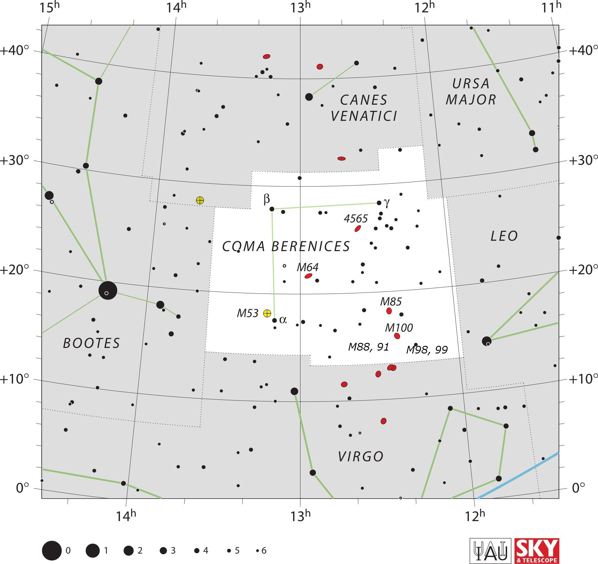

<div data-role="page" id="comaBerenices" data-theme="a">

	<div data-role="header">
		<a href="#home" data-icon="back" data-rel="back">Back</a>
		<h1>Coma Berenices</h1>
		<a href="#home" data-icon="home">Home</a>
	</div>

	<div data-role="content">
		<div class="cssImageMap">
			

			<a href="../messier/m64.html" class="messier" data-x="990"
				data-y="880" data-width="100" data-height="90"></a>

			<a href="../messier/m85.html" class="messier" data-x="1270"
				data-y="990" data-width="100" data-height="80"></a>

			<a href="../messier/m100.html" class="messier" data-x="1290"
				data-y="1080" data-width="120" data-height="60"></a>

			<a href="../messier/m53.html" class="messier" data-x="780"
				data-y="1020" data-width="150" data-height="70"></a>
				
			<a href="coma8891Choice.html" class="messier" data-x="1160"
				data-y="1150" data-width="180" data-height="70"></a>
				
			<a href="coma9899Choice.html" class="messier" data-x="1360"
				data-y="1160" data-width="180" data-height="70"></a>


			<a href="bootes.html" class="constellation" data-side="left"
				data-x="200" data-y="1130" data-width="250" data-height="70"></a>

			<a href="canesVenatici.html" class="constellation" data-side="right"
				data-x="1100" data-y="300" data-width="300" data-height="140"></a>

			<a href="ursaMajor.html" class="constellation" data-side="right"
				data-x="1500" data-y="250" data-width="200" data-height="140"></a>

			<a href="leo.html" class="constellation" data-side="right"
				data-x="1630" data-y="760" data-width="150" data-height="70"></a>

			<a href="virgo.html" class="constellation" data-side="right"
				data-x="1130" data-y="1510" data-width="200" data-height="70"></a>


		</div>

		<div id="here">
			<h2>Coma Berenices</h2>

			<p>Image Credit: IAU and Sky & Telescope magazine (Roger Sinnott
				& Rick Fienberg)
		</div>
	</div>
</div>
